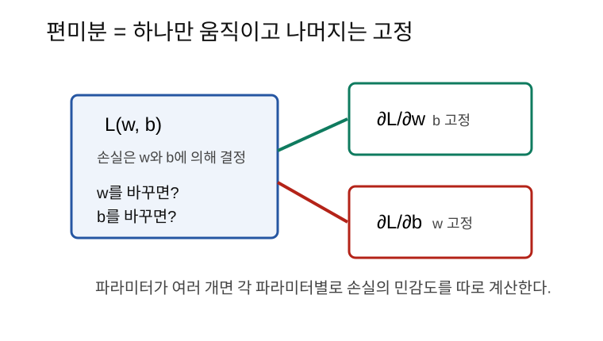
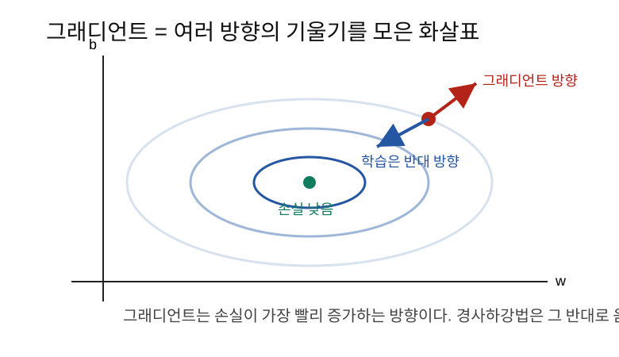
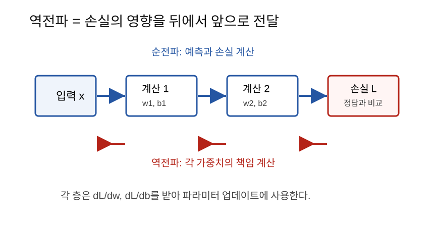

그래디언트는 여러 파라미터에 대한 미분값을 모은 것이고, 역전파는 그 그래디언트를 뒤에서 앞으로 계산하는 방법이다.
5단계에서는 w 하나가 손실에 얼마나 영향을 주는지
계산했다.
dL/dw = w가 조금 바뀔 때 손실 L이 얼마나 바뀌는가?하지만 실제 AI 모델에는 가중치가 하나만 있지 않다. 가중치
w, bias b, 그리고 수많은 행렬 W가
있다.
그래서 이런 질문이 필요하다.
w를 바꾸면 손실은 어떻게 변하는가?
b를 바꾸면 손실은 어떻게 변하는가?
W의 각 원소를 바꾸면 손실은 어떻게 변하는가?이 질문에 대한 답을 모은 것이 그래디언트다.
편미분은 여러 변수 중 하나만 움직이고 나머지는 고정한 채 미분하는 것이다.
손실함수가 다음처럼 두 파라미터에 의해 결정된다고 하자.
L(w, b)그러면 w에 대한 편미분은 b를 고정하고
w만 조금 바꿔 보는 것이다.
∂L/∂w = w가 손실에 주는 영향b에 대한 편미분은 w를 고정하고
b만 조금 바꿔 보는 것이다.
∂L/∂b = b가 손실에 주는 영향
d 대신 ∂를 쓰는 이유는 변수가 여러 개이기
때문이다.
그래디언트는 편미분들을 모은 벡터다.
gradient = [∂L/∂w, ∂L/∂b]예를 들어,
∂L/∂w = -16
∂L/∂b = -8이면 그래디언트는 다음과 같다.
gradient = [-16, -8]이 벡터는 손실이 가장 빠르게 증가하는 방향을 가리킨다.
학습에서는 손실을 줄여야 하므로 그래디언트의 반대 방향으로 움직인다.

파라미터가 하나일 때 업데이트는 다음과 같았다.
w_new = w_old - learning_rate * dL/dw파라미터가 여러 개이면 각각 같은 방식으로 업데이트한다.
w_new = w_old - learning_rate * ∂L/∂w
b_new = b_old - learning_rate * ∂L/∂b즉 그래디언트는 모든 파라미터를 어느 방향으로 움직일지 알려주는 지도다.
모델이 다음과 같다고 하자.
y_hat = wx + b
L = (y_hat - y)^2값은 다음과 같다.
x = 2
w = 3
b = 1
y = 10먼저 예측값을 계산한다.
y_hat = wx + b = 3*2 + 1 = 7손실을 계산한다.
L = (7 - 10)^2 = 9이제 w와 b가 손실에 주는 영향을
계산한다.
dL/dy_hat = 2(y_hat - y)값을 넣으면,
dL/dy_hat = 2(7 - 10) = -6y_hat = wx + b이므로,
dy_hat/dw = x = 2
dy_hat/db = 1chain rule을 적용하면,
∂L/∂w = dL/dy_hat * dy_hat/dw = -6 * 2 = -12
∂L/∂b = dL/dy_hat * dy_hat/db = -6 * 1 = -6따라서 그래디언트는 다음과 같다.
gradient = [-12, -6]learning rate를 0.1로 정하자.
learning_rate = 0.1업데이트 식은 다음과 같다.
w_new = w_old - learning_rate * ∂L/∂w
b_new = b_old - learning_rate * ∂L/∂b값을 넣으면,
w_new = 3 - 0.1*(-12) = 4.2
b_new = 1 - 0.1*(-6) = 1.6새 예측값은 다음과 같다.
y_hat_new = 4.2*2 + 1.6 = 10새 손실은 다음과 같다.
L_new = (10 - 10)^2 = 0이번 예제는 숫자가 딱 맞게 설계되어 한 번에 손실이 0이 되었다. 실제 학습에서는 보통 여러 번 반복해서 조금씩 좋아진다.
위 예제에서 그래디언트는 다음과 같았다.
∂L/∂w = -12
∂L/∂b = -6둘 다 음수다. 이것은 w와 b를 키우면 손실이
줄어든다는 뜻이다.
그래서 업데이트 후에 실제로 w는 3에서 4.2로,
b는 1에서 1.6으로 커졌다.
역전파는 손실에서 시작해 앞쪽 파라미터까지 그래디언트를 계산하는 과정이다.
순전파는 앞에서 뒤로 간다.
입력 x -> 모델 계산 -> 예측 y_hat -> 손실 L역전파는 뒤에서 앞으로 간다.
손실 L -> 예측 y_hat -> 각 층의 가중치와 bias
역전파가 하는 일은 각 파라미터의 책임을 계산하는 것이다.
이 가중치가 손실을 얼마나 키웠는가?
이 bias가 손실을 얼마나 줄일 수 있는가?딥러닝은 함수가 여러 개 연결된 구조다.
x -> z1 -> a1 -> z2 -> y_hat -> L앞쪽 파라미터가 손실에 미치는 영향을 알려면 중간 계산을 모두 지나가야 한다.
dL/dw1 = dL/dy_hat * dy_hat/dz2 * dz2/da1 * da1/dz1 * dz1/dw1복잡해 보이지만 의미는 단순하다.
연결된 변화율을 차례대로 곱한다.이것이 5단계의 chain rule이고, 신경망 전체에 적용한 것이 역전파다.
x = 2.0
w = 3.0
b = 1.0
y = 10.0
lr = 0.1
y_hat = w * x + b
loss = (y_hat - y) ** 2
dL_dyhat = 2 * (y_hat - y)
dyhat_dw = x
dyhat_db = 1
dL_dw = dL_dyhat * dyhat_dw
dL_db = dL_dyhat * dyhat_db
w_new = w - lr * dL_dw
b_new = b - lr * dL_db
print(y_hat, loss) # 7.0 9.0
print(dL_dw, dL_db) # -12.0 -6.0
print(w_new, b_new) # 4.2 1.6import torch
x = torch.tensor(2.0)
w = torch.tensor(3.0, requires_grad=True)
b = torch.tensor(1.0, requires_grad=True)
y = torch.tensor(10.0)
y_hat = w * x + b
loss = (y_hat - y) ** 2
loss.backward()
print(w.grad) # tensor(-12.)
print(b.grad) # tensor(-6.)PyTorch의 backward()는 역전파를 실행해서
w.grad, b.grad에 그래디언트를 저장한다.
| 헷갈리는 말 | 쉽게 풀어쓴 말 |
|---|---|
| 편미분 | 여러 변수 중 하나만 바꿔 보는 미분 |
| 그래디언트 | 모든 편미분을 모은 벡터 |
| 그래디언트 방향 | 손실이 가장 빨리 증가하는 방향 |
| 경사하강법 | 그래디언트의 반대 방향으로 움직이는 방법 |
| 순전파 | 입력에서 손실까지 계산하는 과정 |
| 역전파 | 손실에서 각 파라미터의 그래디언트를 계산하는 과정 |
y_hat = wx + b에서 dy_hat/db는 왜
1인가?loss.backward()는 무엇을 계산하는가?편미분은 파라미터 하나씩 손실에 주는 영향을 계산하는 방법이다. 그래디언트는 그 편미분들을 모은 벡터다. 역전파는 손실에서 출발해 각 파라미터의 그래디언트를 뒤로 전달하며 계산하는 과정이고, 본질은 chain rule의 반복 적용이다.
다음 노트: 07_경사하강법 (준비 중)